Socle Lab IAM — Infrastructure Commune
Mise en place du laboratoire
Ce TP0 établit le socle technique commun à tous les TP du module (Chapitres 2 à 7). Il définit précisément les machines virtuelles, les systèmes d'exploitation, les logiciels/services à installer, la topologie de l'infrastructure, le plan d'adressage IP et les dépendances fonctionnelles entre composants.
Plan d'adressage - LAN-ERIS (10.20.0.0/24)
| Rôle | Nom VM | OS | Adresse IP | DNS | Services |
|---|---|---|---|---|---|
| Contrôleur de domaine | DC1 | Windows Server 2022 | 10.20.0.10 | 10.20.0.10 | AD DS + DNS + NTP |
| Contrôleur de domaine | DC2 | Windows Server 2022 | 10.20.0.11 | 10.20.0.10 | AD DS + DNS (secours) |
| Console / Gestion | MGMT | Windows 11 | 10.20.0.20 | 10.20.0.10 | RSAT + navigateurs + outils |
| Client | W11-01 | Windows 11 | 10.20.0.21 | 10.20.0.10 | Poste joint au domaine |
| Bastion PAM | BASTION | Ubuntu Server 22.04 | 10.20.0.30 | 10.20.0.10 | SSH + outils PAM |
| App interne | APP1 | Ubuntu Server 22.04 | 10.20.0.40 | 10.20.0.10 | Nextcloud / Gitea |
| IdP SSO | IDP1 | Ubuntu Server 22.04 | 10.20.0.50 | 10.20.0.10 | Keycloak (OIDC/SAML) |
| Journalisation | SIEM1 | Ubuntu Server 22.04 | 10.20.0.60 | 10.20.0.10 | Wazuh / ELK (optionnel) |
Checklist de validation TP0
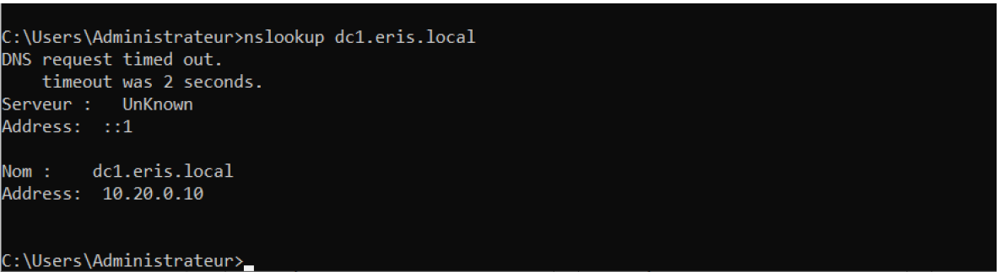
AD DS + DNS validé
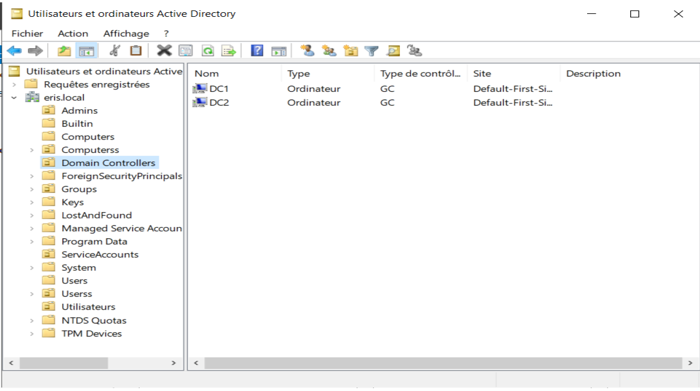
Domain Controllers (DC1 + DC2)
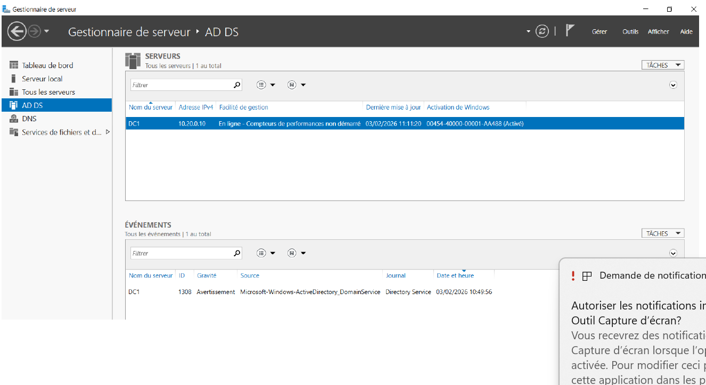
nslookup eris.local → 10.20.0.10 + 10.20.0.11
- Toutes les VM démarrent et sont joignables (ping) sur 10.20.0.0/24
- DC1 : AD DS + DNS installés — dc1.eris.local résout correctement
- DC2 : rejoint la forêt/domaine eris.local en tant que DC secondaire
- Clients Windows : DNS pointant vers DC1/DC2 — jointure domaine possible
- Ubuntu : résolution DNS OK (nslookup dc1.eris.local) — capture requise
- Synchronisation de temps : horloge cohérente entre clients et DC (écart < 2 min)
Annuaire & Identités — AD DS, OU, RBAC, LDAP
Déploiement Active Directory
Déploiement d'un domaine Active Directory avec DNS redondant (DC1/DC2), structuration de l'annuaire en Unités d'Organisation, implémentation d'un modèle RBAC par groupes de sécurité, jointure d'un poste Windows 11 et préparation de l'interopérabilité LDAP/LDAPS pour l'intégration applicative.
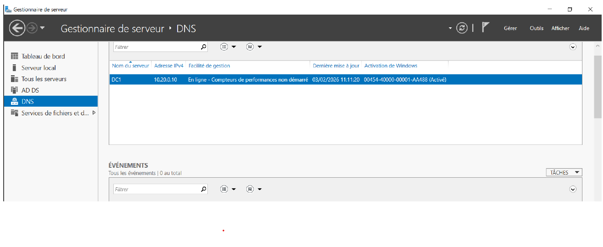
IP 10.20.0.10 — Rôle AD DS installé et promu
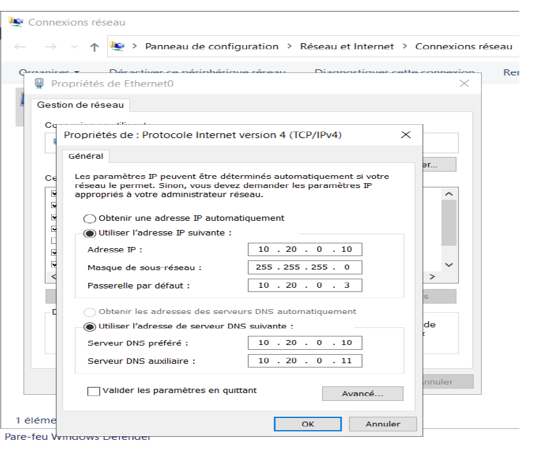
Propriétés TCP/IPv4 — Redondance DNS
Structure OU — Modèle entreprise ERIS-CORP
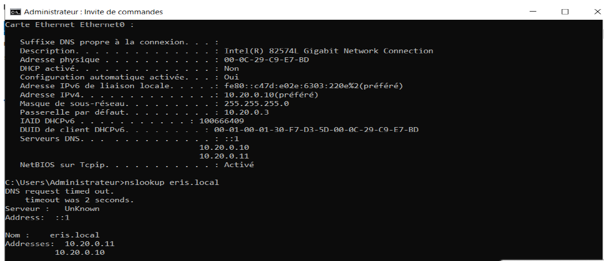
Computers — APP2-SRV, BASTION-02, IDP1, NEXTCLOUD-SRV-A, SIEM, WIN-10
Étape D — Groupes RBAC (Rôles métiers)
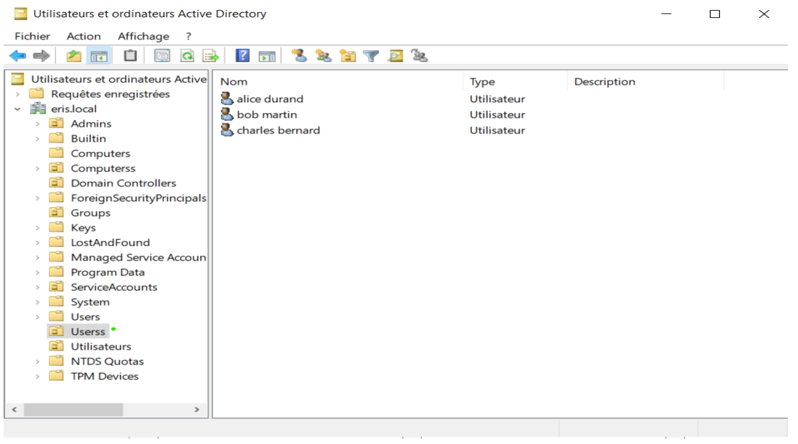
GRP_All_Users, GRP_FIN, GRP_HR, GRP_IT_Admins, GRP_IT_Support_N1, GRP_IT_Support_N2
| Rôle métier | Groupe AD | Applications | Niveau d'accès |
|---|---|---|---|
| Employé standard | GRP_All_Users |
APP1 | Lecture |
| Support IT N1 | GRP_IT_Support_N1 |
APP1 | Lecture / Support |
| Support IT N2 | GRP_IT_Support_N2 |
APP1APP2 | Support étendu |
| Administrateur IT | GRP_IT_Admins |
APP1APP2 | Admin (via PAM) |
| Finance | GRP_FIN |
APP2 | Lecture / Écriture |
Étape E — Comptes utilisateurs (nominatifs, admins, services)
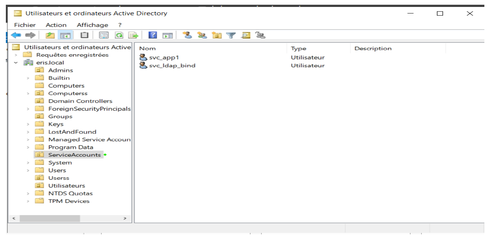
alice.durand / bob.martin / charles.bernard
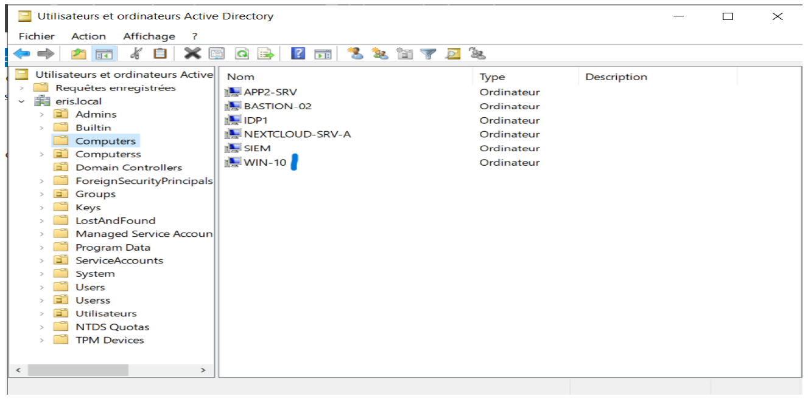
admin.alice — OU=Admins
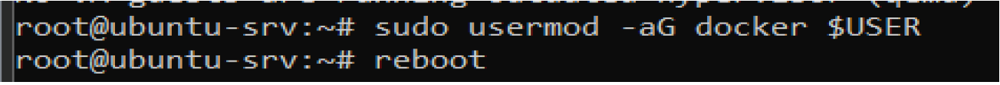
svc_app1 / svc_ldap_bind — OU=ServiceAccounts
Étape G — Préparation LDAP/LDAPS
Bind DN : CN=svc_ldap_bind,OU=ServiceAccounts,DC=eris,DC=local
Serveur : dc1.eris.local (secours : dc2.eris.local)
Port LDAP : 389 | Port LDAPS : 636
sudo apt update && sudo apt -y install ldap-utils # Test requête LDAP anonyme depuis APP1 ldapsearch -x -H ldap://dc1.eris.local -s base
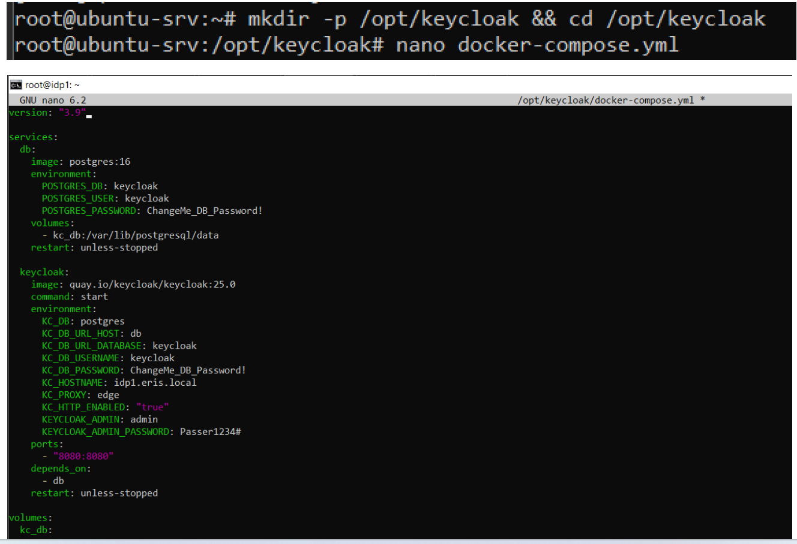
Requête LDAP anonyme vers dc1.eris.local
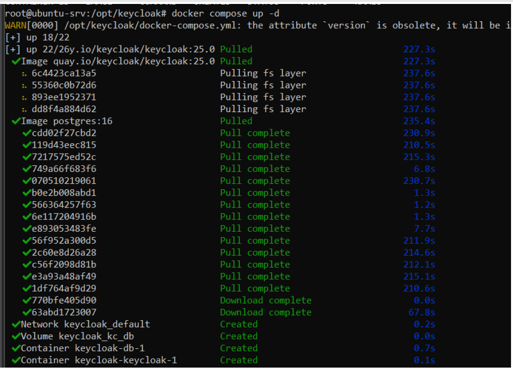
OU=ServiceAccounts — Droits lecture LDAP
Questions de consolidation
Risque 2 — Propagation latérale facilitée : un seul compte avec double rôle représente une cible unique. Un attaquant compromettant l'e-mail d'un admin via son compte nominatif (utilisé pour la navigation web, la messagerie) accède directement aux ressources d'administration critiques — serveurs, contrôleurs de domaine — sans devoir escalader.
NTP : Kerberos impose une tolérance temporelle maximale de 5 minutes entre client et serveur (clock skew). Au-delà, les tickets sont rejetés comme invalides pour prévenir les attaques par rejeu (replay attacks). Une désynchronisation des horloges provoque immédiatement des échecs d'authentification silencieux — les utilisateurs ne peuvent plus se connecter alors que les comptes sont valides.
Groupe RBAC : mécanisme de contrôle d'accès aux ressources (applications, dossiers partagés, services). L'appartenance à un groupe RBAC détermine ce qu'un utilisateur peut faire — lire, écrire, administrer une application. Un même utilisateur peut appartenir à plusieurs groupes RBAC selon ses rôles métiers, indépendamment de l'OU où son compte est stocké.
Authentification Forte — MFA & Zero Trust
Déploiement Keycloak + MFA TOTP
Mise en œuvre d'une authentification multifacteur (MFA) via TOTP pour l'accès applicatif via SSO, configuration de règles d'accès conditionnel (horaires, réseau source), et application d'une approche Zero Trust : vérifier explicitement l'identité, limiter les privilèges, journaliser et valider en continu.
sudo apt update && sudo apt -y install ca-certificates curl gnupg sudo apt -y install docker-ce docker-ce-cli containerd.io docker-buildx-plugin docker-compose-plugin sudo usermod -aG docker $USER && reboot
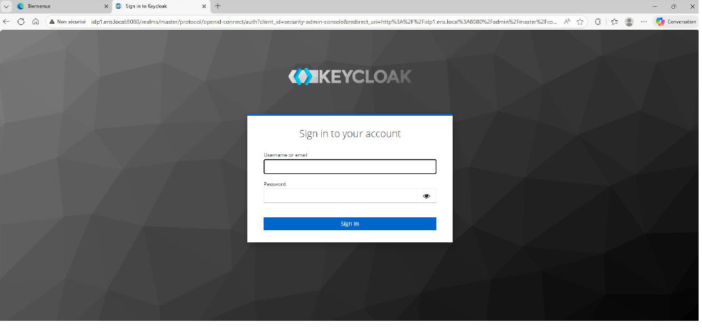
sudo usermod -aG docker $USER — reboot
Configuration docker-compose.yml — Keycloak + PostgreSQL
version: "3.9" services: db: image: postgres:16 environment: POSTGRES_DB: keycloak POSTGRES_USER: keycloak POSTGRES_PASSWORD: ChangeMe_DB_Password! volumes: - kc_db:/var/lib/postgresql/data restart: unless-stopped keycloak: image: quay.io/keycloak/keycloak:25.0 command: start environment: KC_DB: postgres KC_DB_URL_HOST: db KC_HOSTNAME: idp1.eris.local KC_HTTP_ENABLED: "true" KEYCLOAK_ADMIN: admin KEYCLOAK_ADMIN_PASSWORD: ChangeMe_Admin! ports: - "8080:8080" depends_on: - db
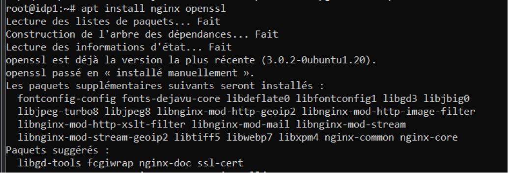
Conteneurs keycloak-keycloak-1 et keycloak-db-1 : Up
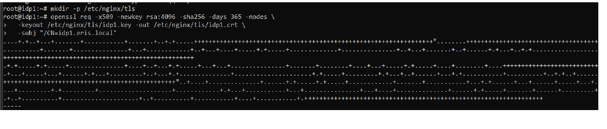
Page de connexion Sign in — depuis W11-01
Étape C — HTTPS avec Nginx (certificat TLS self-signed)
sudo apt -y install nginx openssl sudo mkdir -p /etc/nginx/tls sudo openssl req -x509 -newkey rsa:4096 -sha256 -days 365 -nodes \ -keyout /etc/nginx/tls/idp1.key -out /etc/nginx/tls/idp1.crt \ -subj "/CN=idp1.eris.local"
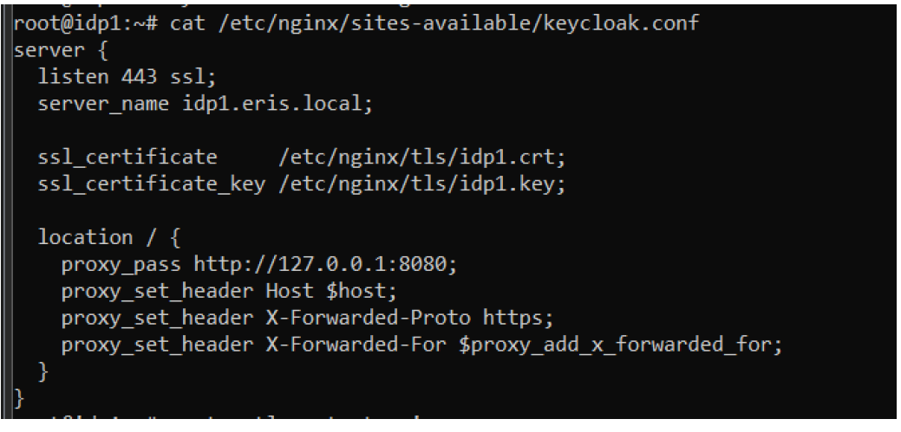
https://idp1.eris.local — Nginx reverse proxy
Étape D — Fédération AD via LDAP (Keycloak → DC1)
Vendor : Active Directory
Edit Mode : READ_ONLY
Users DN : OU=Userss,DC=eris,DC=local
Bind DN : CN=svc_ldap_bind,OU=ServiceAccounts,DC=eris,DC=local
Username LDAP attribute : cn | UUID : objectGUID
User object classes : person, organizationalPerson, user
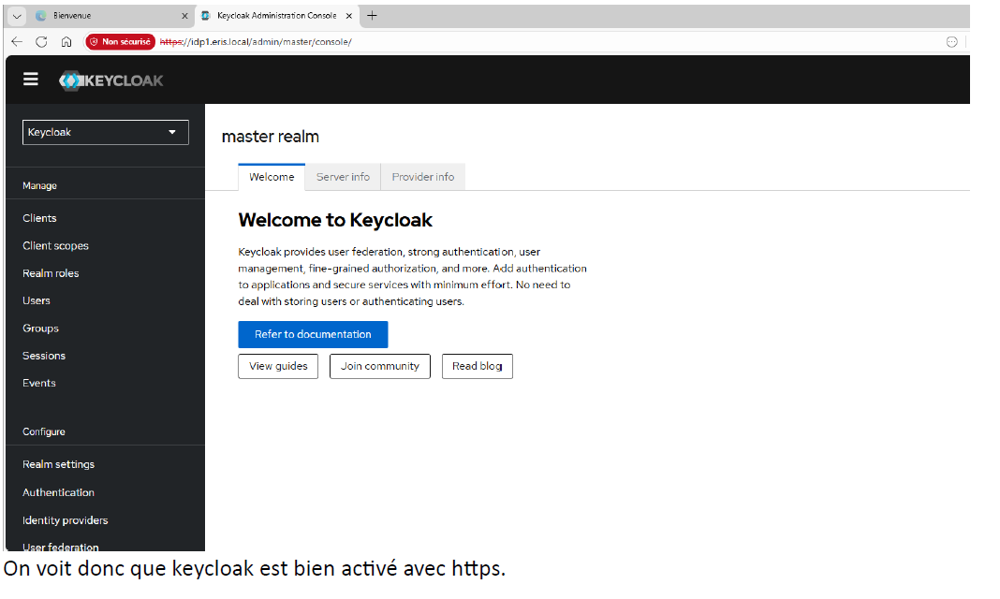
Successfully connected to LDAP — Realm ERIS
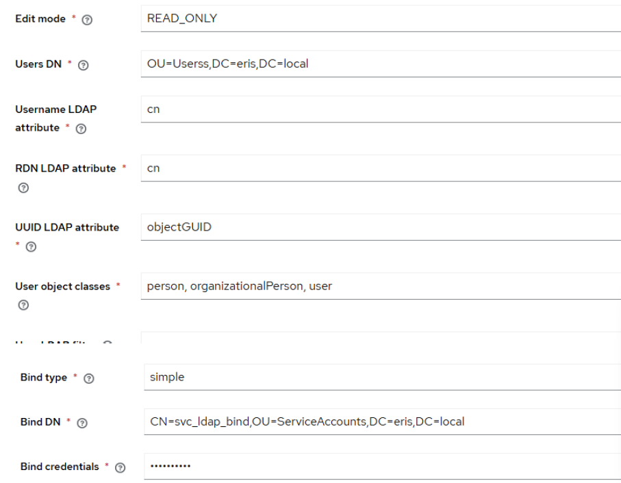
admin.alice / alice.durand / bob.martin / charles.bernard / svc.app1
Étape E — Activation MFA TOTP (OTP via Authenticator)
- 01.Realm ERIS → Authentication → Flows — Dupliquer le flow Browser en
Browser-ERIS - 02.Ajouter
OTP FormaprèsUsername Password Form— Mettre en mode Required - 03.Realm ERIS → Bindings → Browser Flow = Browser-ERIS
- 04.Premier login utilisateur : scan QR Code avec Microsoft Authenticator / Google Authenticator, saisie code 6 chiffres
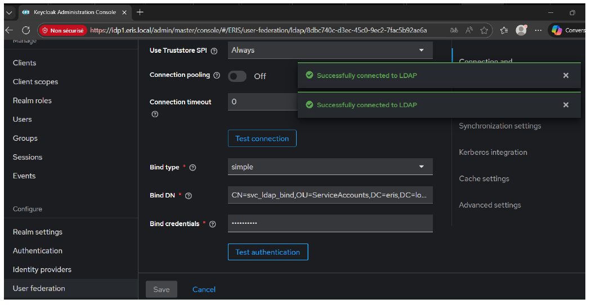
Flow Browser-ERIS — OTP Form Required — Code TOTP 062 791
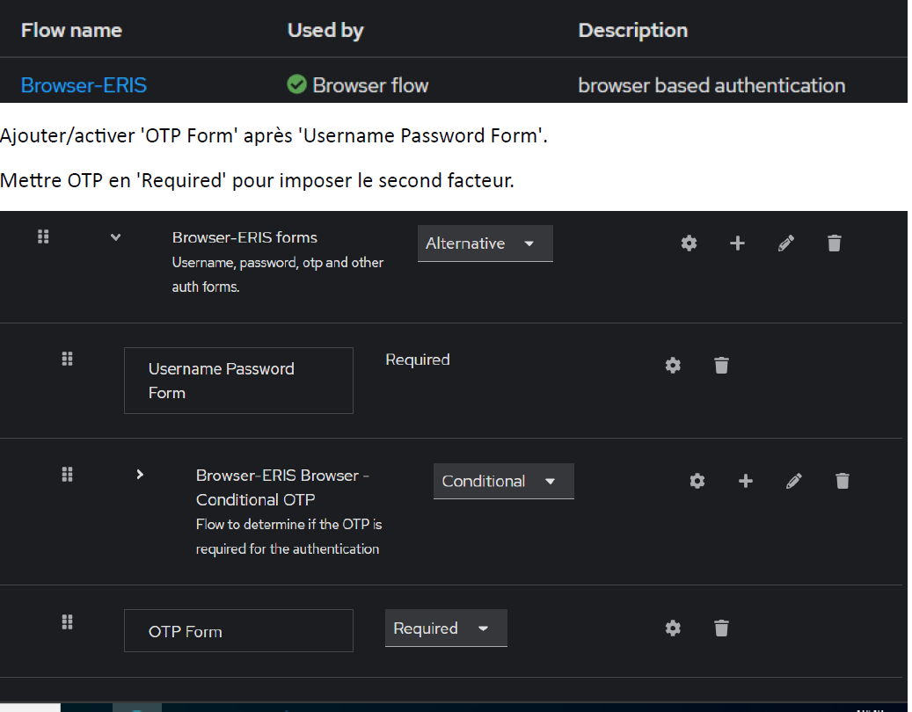
Personal Info — MFA TOTP activé
Étape G — Protection APP1 par OIDC (oauth2-proxy)
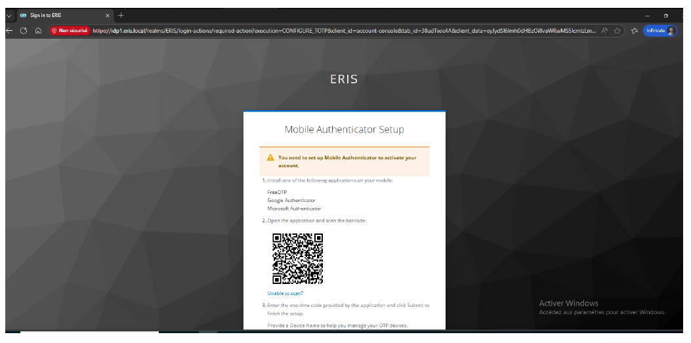
curl -I http://app1.eris.local → HTTP/1.1 200 OK depuis IDP1
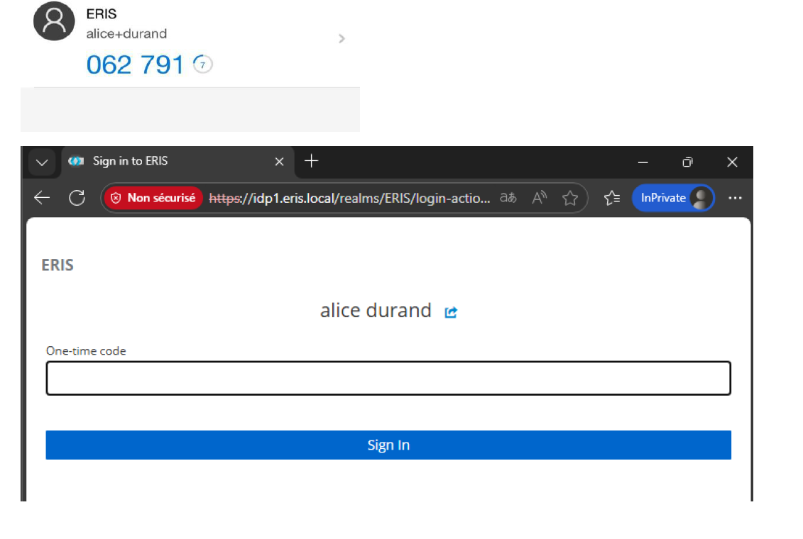
Puis redirection vers Keycloak ERIS — idp1.eris.local
Fédération & SSO — OIDC & SAML
OpenID Connect + SimpleSAMLphp
Mise en place d'un SSO complet entre un IdP (Keycloak) et deux SP : APP1 (SP OIDC via oauth2-proxy) et APP2 (SP SAML via SimpleSAMLphp). Validation des flux de redirection, des assertions et des jetons, et application des bonnes pratiques HTTPS, redirect URIs, signatures et limitation des claims.
Base identités
LDAP vers DC1
Dépend IDP1
SAML vers IDP1
Partie A — SP OIDC (APP1) — Discovery endpoint
curl -k https://idp1.eris.local/realms/ERIS/.well-known/openid-configuration # Retourne : authorization_endpoint, token_endpoint, userinfo_endpoint, # jwks_uri, introspection_endpoint, etc.
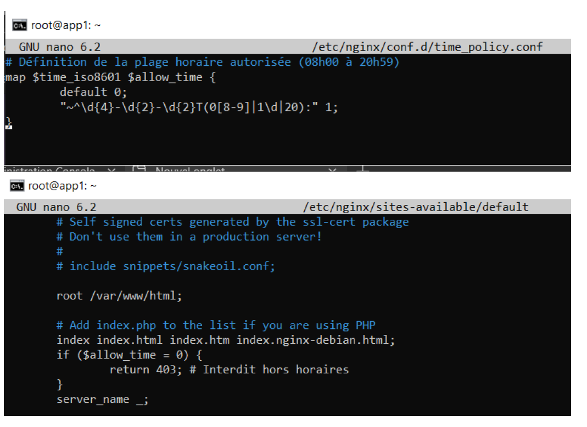
Endpoints OIDC Discovery — Realm ERIS
Partie B — SP SAML (APP2) : SimpleSAMLphp
sudo apt update && sudo apt -y install nginx php-fpm php-xml php-mbstring php-curl php-zip php-gd unzip cd /tmp && wget https://github.com/simplesamlphp/simplesamlphp/releases/download/v2.0.4/simplesamlphp-2.0.4.tar.gz tar -xzf simplesamlphp-2.0.4.tar.gz sudo rsync -a simplesamlphp-2.0.4/ /var/www/simplesamlphp/
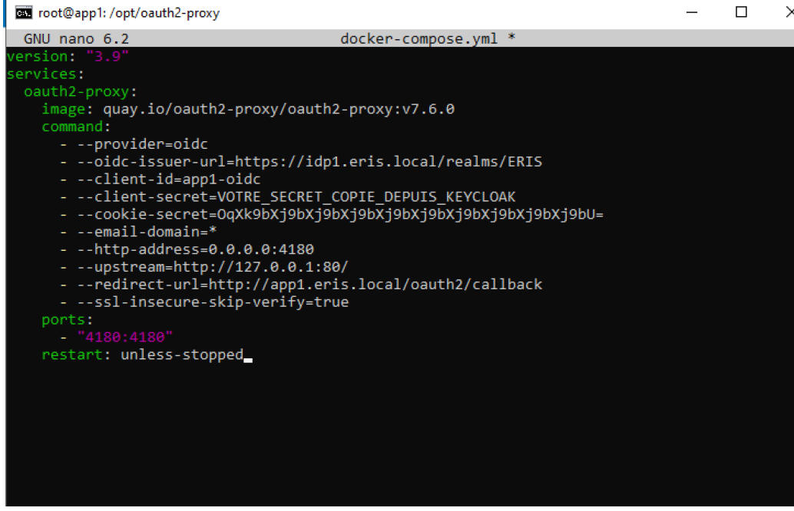
Page SimpleSAMLphp accessible — Nginx + PHP-FPM
Partie C — Client OIDC app1-oidc dans Keycloak
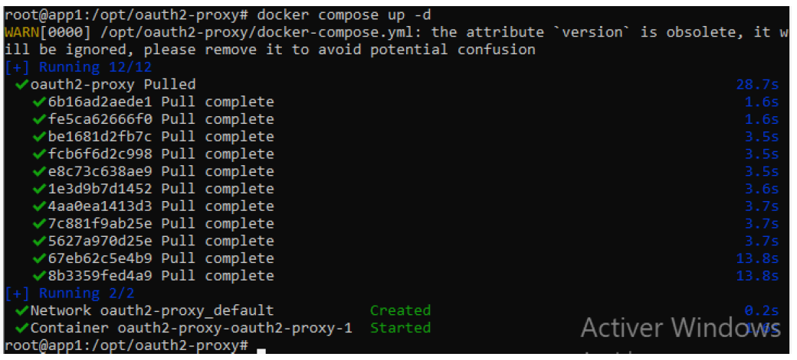
Valid redirect URIs + Web origins app1.eris.local

SAML — Métadonnées SP exportées
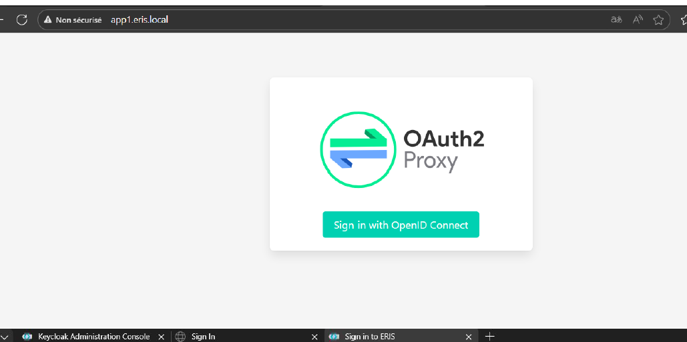
saml20-idp-remote.php — Échange métadonnées SAML
Questions de consolidation
OIDC (basé sur OAuth 2.0) est conçu pour les applications modernes : flux JSON légers, tokens JWT, support natif des applications mobile et SPA, et interopérabilité simplifiée avec les API REST. Sa simplicité d'implémentation et son alignement avec les standards web actuels en font le choix par défaut pour les nouvelles applications cloud-native.
iss (Issuer) — URL de l'IdP qui a émis le token. Doit correspondre exactement à l'IdP de confiance configuré.
aud (Audience) — Client ID du SP destinataire. Évite qu'un token émis pour APP1 soit utilisé sur APP2.
exp (Expiration) — Horodatage d'expiration. Un token expiré doit être systématiquement rejeté.
preferred_username / email — Attributs utilisateur à valider selon les claims exposés par l'IdP.
Si elle est mal configurée : l'IdP envoie l'assertion SAML vers une URL incorrecte (inexistante ou appartenant à un tiers), provoquant soit une erreur 404 silencieuse, soit — dans le pire cas — une redirection vers un site malveillant qui capture l'assertion et usurpe l'identité de l'utilisateur (attaque open redirect / assertion hijacking). C'est pourquoi les ACS URL doivent être validées strictement sans wildcard.
https://*.example.com/* permet à un attaquant de créer un sous-domaine malveillant et d'intercepter les tokens OAuth via une redirection légitime.2. Absence de vérification de signature SAML — Accepter des assertions non signées ou avec un certificat expiré permet de forger des assertions et de s'authentifier sous n'importe quelle identité sans avoir de compte valide.
3. Client public sans PKCE — Un client OIDC configuré en mode public (sans secret) sans PKCE (Proof Key for Code Exchange) est vulnérable au vol du code d'autorisation : un attaquant interceptant le code peut l'échanger contre un token d'accès valide.
Gouvernance des Identités — IGA, JML & SoD
Recertification & Séparation des Tâches
Mise en œuvre d'une gouvernance des identités (IGA) avec modélisation des rôles, déploiement du processus Joiner/Mover/Leaver (JML), organisation d'une recertification périodique des droits et mise en évidence des conflits de Séparation des Tâches (SoD).
Processus JML — Cas pratique : Alice Durand
Conflits SoD identifiés
GRP_HR + GRP_IT_Admins — RH + Admin : accès aux données RH + capacité à modifier les comptes utilisateurs
Test SoD réalisé : ajout volontaire de alice.durand dans GRP_FIN et GRP_IT_Admins → conflit identifié → retrait de GRP_IT_Admins documenté.
Questions de consolidation
ABAC (Attribute-Based Access Control) conditionne l'accès à des attributs contextuels multiples : heure, localisation, type d'appareil, sensibilité des données. Plus granulaire et dynamique — une même règle peut autoriser l'accès depuis le réseau interne en heures ouvrées et le bloquer hors de ces conditions. En gouvernance, ABAC permet des politiques plus fines mais nécessite une administration plus complexe des attributs.
Privileged Access Management — Bastion & JIT
Bastion SSH — JIT, Séparation des Privilèges & Traçabilité
Mise en œuvre d'un bastion d'administration centralisant tous les accès sensibles. Application du principe du moindre privilège et des accès temporaires JIT (Just-In-Time), séparation stricte des comptes nominatifs et administrateurs, et traçabilité complète des actions via auditd et les journaux SSH.
Déploiement VM Bastion — Ubuntu Server 22.04
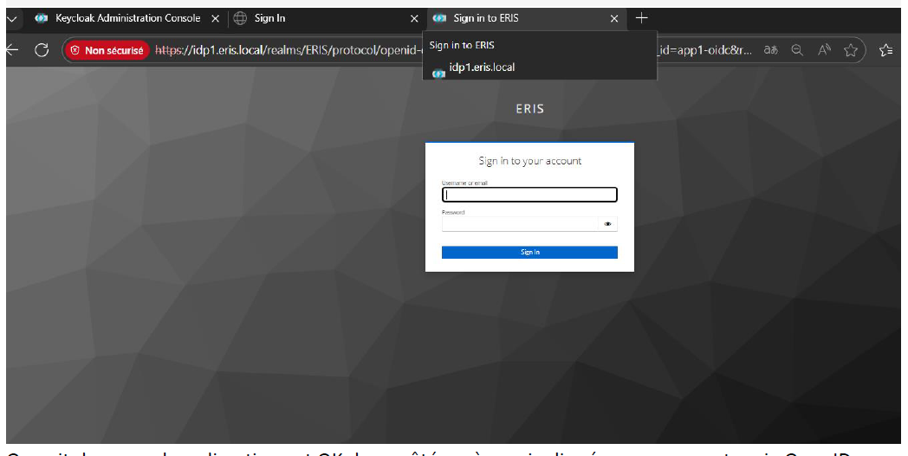
Ubuntu 22.04 LTS — bastion login interface
# /etc/netplan/00-installer-config.yaml network: ethernets: ens33: addresses: [10.20.0.30/24] routes: [{to: default, via: 10.20.0.1}] nameservers: addresses: [10.20.0.10, 10.20.0.11] sudo netplan apply && ip a
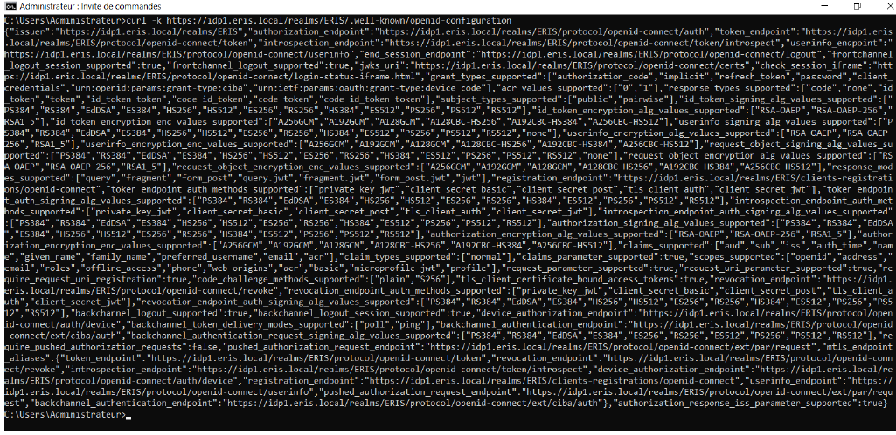
Configuration réseau appliquée
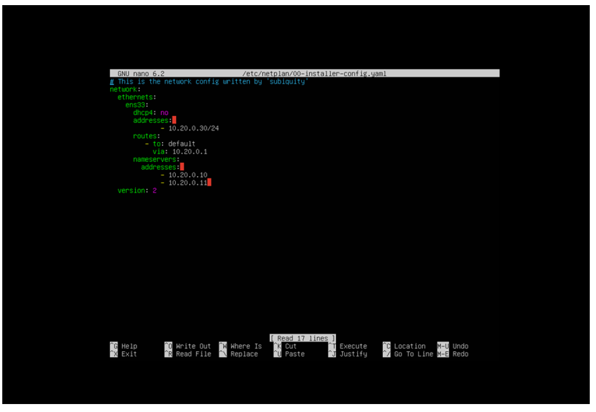
nslookup dc1.eris.local → 10.20.0.10
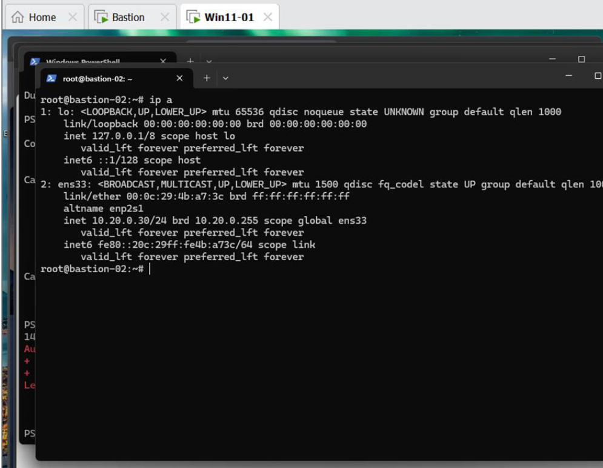
Non-authoritative answer : 10.20.0.10
Durcissement SSH + Auditd
# Configuration SSH sécurisée Port 22 Protocol 2 PermitRootLogin no PasswordAuthentication no PubkeyAuthentication yes UsePAM yes KbdInteractiveAuthentication yes PermitEmptyPasswords no
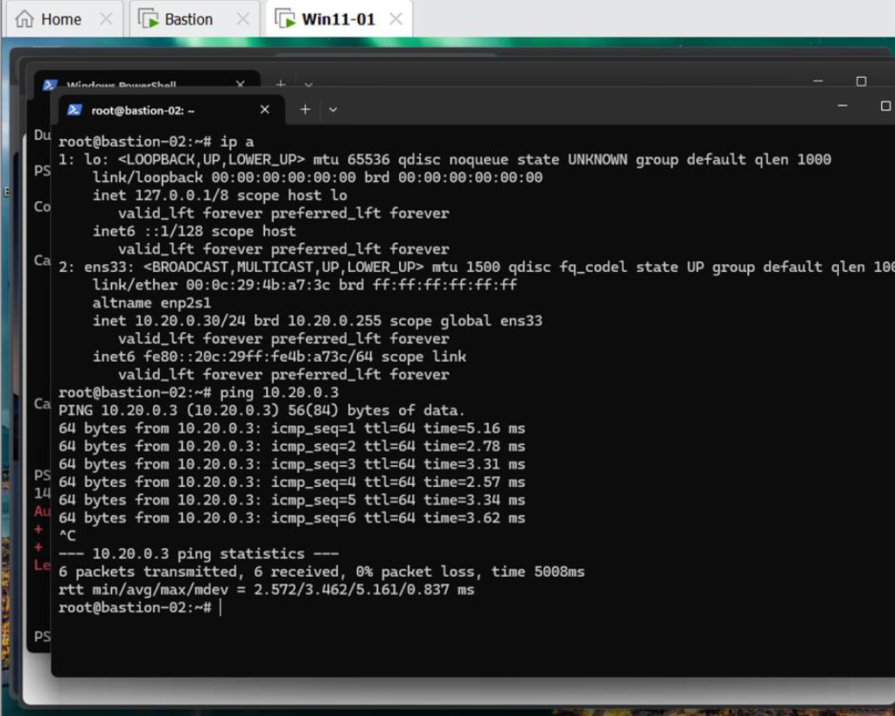
Test SSH depuis W11-01 : ssh bastion@10.20.0.30
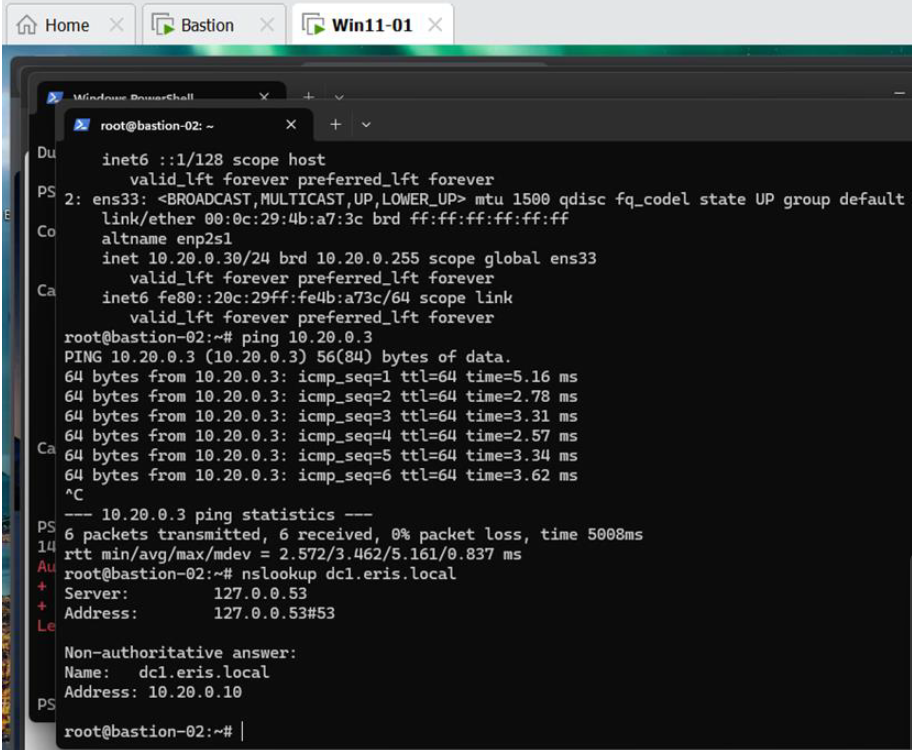
systemctl status auditd — Active (running)
Séparation des privilèges + Groupe pam-admins
sudo adduser --force-badname alice.bastion sudo groupadd pam-admins # Autoriser sudo uniquement au groupe pam-admins echo "%pam-admins ALL=(ALL) ALL" | sudo tee /etc/sudoers.d/pam-admins sudo chmod 440 /etc/sudoers.d/pam-admins sudo visudo -c
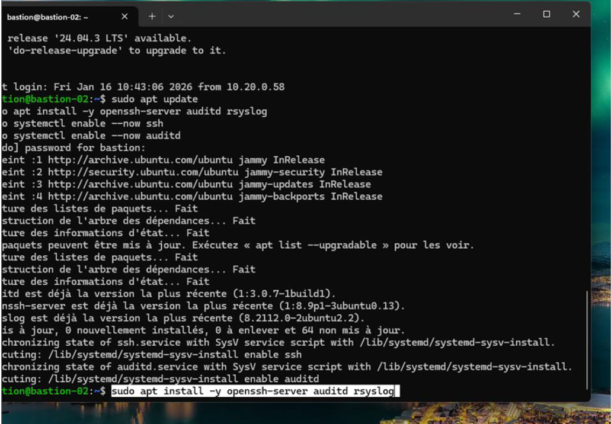
sudoers.d/pam-admins — visudo -c : parsed OK
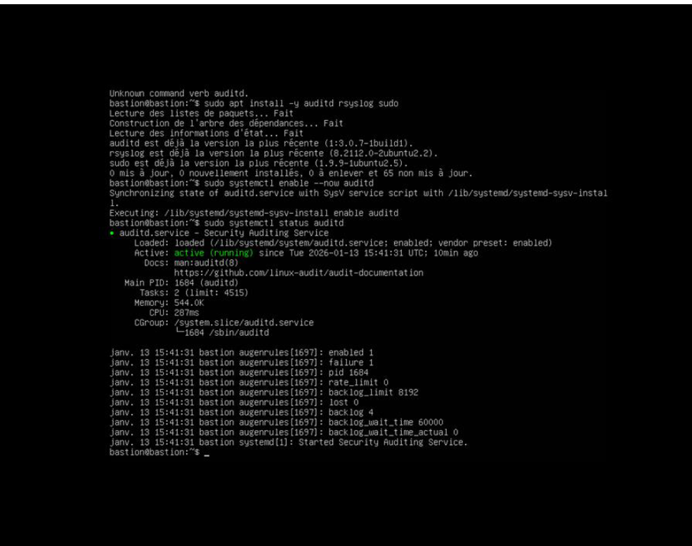
/etc/sudoers.d/pam-admins — Syntaxe validée
Accès JIT — Élévation temporaire alice.bastion
sudo -lSorry, user alice.bastion may not run sudo
sudo usermod -aG pam-admins alice.bastionUser may run: (ALL) ALL
sudo gpasswd -d alice.bastion pam-adminsRetrait confirmé — privilèges révoqués
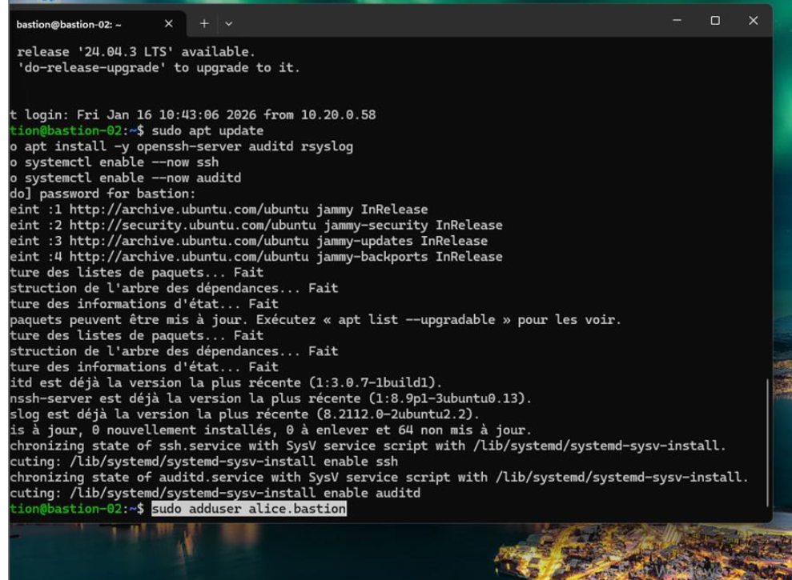
usermod + gpasswd -d alice.bastion pam-admins
Traçabilité — Logs SSH, sudo et auditd
# Journaux SSH sudo grep sshd /var/log/auth.log | tail -n 20 # Journaux sudo sudo grep sudo /var/log/auth.log | tail -n 20 # Règle auditd sur sudo sudo auditctl -w /usr/bin/sudo -p x -k sudo-commands sudo ausearch -k sudo-commands
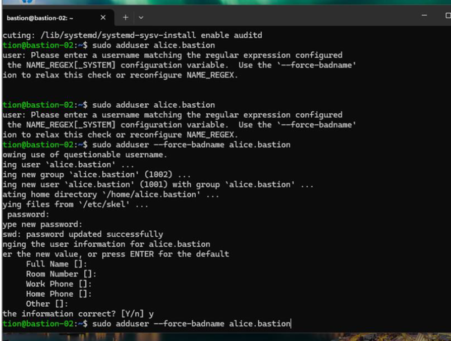
Sessions SSH + sudo tracés — pam_unix, sshd, sudo
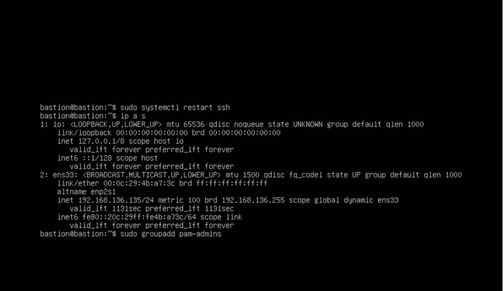
Règles auditd chargées — Événements sudo tracés
Questions de consolidation
Cas Pratique ERIS — IAM de Bout en Bout
Architecture IAM complète et cohérente
ERIS-CORP dispose d'un SI hybride. Les identités sont gérées dans Active Directory. L'accès aux applications se fait via SSO centralisé avec authentification forte MFA. Les droits sont gouvernés (IGA) et les accès à privilèges sont contrôlés via le bastion PAM. Ce TP6 articule l'ensemble des composants déployés dans un scénario réel bout-en-bout.
| VM | OS | IP | Rôle | Fonctions IAM |
|---|---|---|---|---|
| DC1/DC2 | Windows Server 2022 | 10.20.0.10/.11 | Annuaire | Identités, groupes, Kerberos, DNS |
| IDP1 | Ubuntu 22.04 | 10.20.0.50 | IdP | SSO, MFA, fédération |
| APP1 | Ubuntu 22.04 | 10.20.0.40 | SP OIDC | Accès métier |
| APP2 | Ubuntu 22.04 | 10.20.0.41 | SP SAML | Accès finance |
| BASTION | Ubuntu 22.04 | 10.20.0.30 | PAM | Accès admin JIT |
| W11-01 | Windows 11 | 10.20.0.21 | Client | Tests utilisateurs |
✔ Matrice rôles ↔ groupes ↔ applications
✔ Exports Keycloak (clients OIDC + SAML)
✔ Extraits de logs (Keycloak, SSH, sudo, auditd)
✔ Compte rendu de recertification et SoD
◈ Captures écran parcours JML + incidents simulés